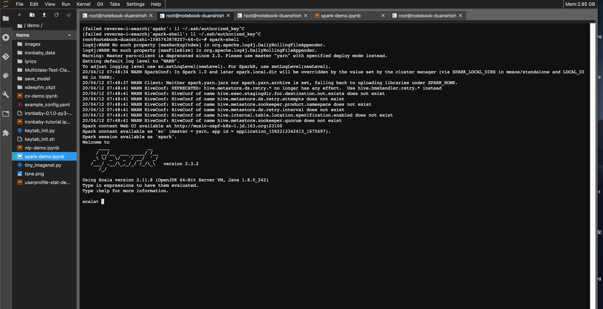
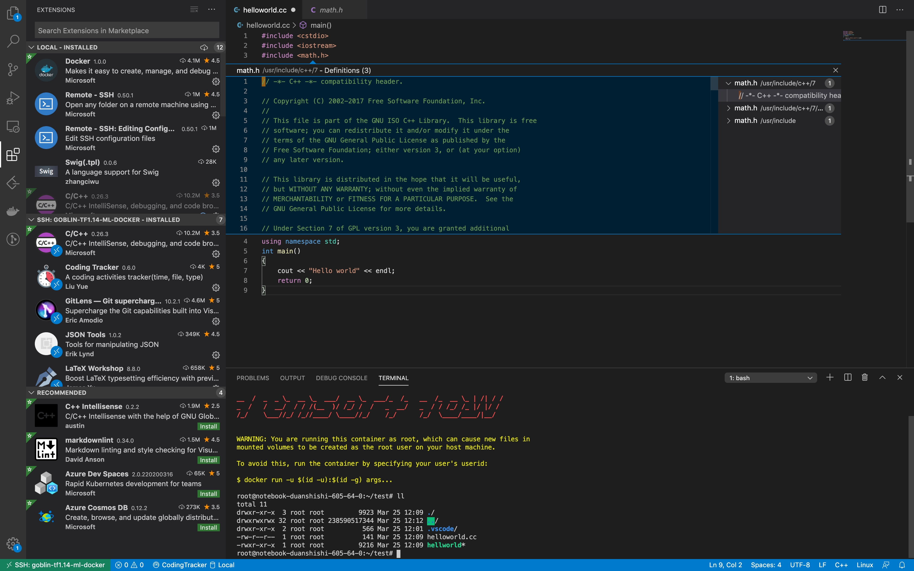

网易云音乐机器学习平台实践
title: 网易云音乐机器学习平台实践
description: 机器学习平台为算法相关工作者提供基础的开发调度环境，为机器学习各个系统提供集成与接入的能力，为各个机器学习相关子系统形成一套标准化流程提供保障。
图片来源：https://ml-ops.org/content/mlops-principles
作者： burness
机器学习平台基础架构
在网易云音乐内部，机器学习平台早期主要承担着包括音乐推荐、主站搜索、创新算法业务在内的核心业务，慢慢地也覆盖包括音视频、NLP等内容理解业务。机器学习平台基础架构如下，目前我按功能将其抽象为四层，本篇文章也会从这四个方面详细描述我们在各个抽象层的具体工作。

资源层:平台核心能力保障
主要为平台提供资源保障与成本优化的能力，资源保障覆盖了包括算力、存储、通信、租户等各个方面，而成本优化目前我们采用虚拟化，提供资源池的动态分配，另外考虑到某些业务突发性的大算力需求，资源层能够快速、有效地从其他团队、平台资源层调取到足够的资源提供给业务使用。本章以VK与阿里云ECI为例，简述云音乐机器学习平台在资源这块的工作：
Visual Kubelet资源
目前网易内部有很多资源属于不同的集群来管理，有很多的k8s集群， 杭研云计算团队开发kubeMiner网易跨kubernetes集群统一调度系统，能够动态接入其他闲置集群的资源使用。过去一段时间，云音乐机器学习平台和云计算合作，将大部分CPU分布式相关的如图计算、大规模离散和分布式训练，弹性调度至vk资源，在vk资源保障的同时，能够大大增加同时迭代模型的并行度，提升业务迭代效率；
平台使用VK资源可以简单地理解为外部集群被虚拟为k8s集群中的虚拟节点，并在外部集群变化时更新虚拟节点状态，这样就可以直接借助k8s自身的调度能力，支持Pod调度到外部集群的跨集群调度。

云音乐平台的CPU算力任务主要包括图计算、大规模离散和分布式训练三类，涉及到 tfjob, mpijob， paddlepaddle几种任务类型，任务副本之间均需要网络通信，包括跨集群执行Pod Exec，单副本规格大概在（4c~8c, 12G~20G）之间； 但是因资源算力不足，任务的副本数以及同时可运行的任务并行度很低，所以各个训练业务需忍受长时间的训练和任务执行等待。接入VK后，能够充分利用某些集群的闲置算力， 多副本、多任务并行地完成训练模型的迭代。
阿里云ECI；
CPU资源可以通过kubeMiner来跨集群调度，但是GPU这块，基本上整个集团都比较紧张，为了防止未来某些时候，需要一定的GPU资源没办法满足。机器学习平台支持了阿里云ECI的调度，以类似VK的方式在我们自己的机器学习平台上调度起对应的GPU资源，如下是云音乐机器学习平台调用阿里云ECI资源，在云音乐机器学习平台上，用户只需要在选择对应的阿里云ECI资源，即可完成对阿里云ECI的弹性调度，目前已有突发性业务在相关能力上使用：


底层基座层：基础能力赋能用户
底层基座层是利用资源层转换为基础的能力，比如 通过spark、hadoop支持大数据基础能力、通过flink支持实时数据处理能力，通过k8s+docker支持海量任务的资源调度能力，这其中我们主要讲下ceph在整个平台的使用以及我们在实践优化中的一些工作。
Ceph
Ceph作为业界所指的一套分布式存储，在机器学习平台的业务中很多使用，比如在开发任务与调度任务中提供同一套文件系统，方便打通开发与调度环境，多读读写能力方便在分布式任务中同用一套文件系统。当然， 从0到1的接入，很多时候是功能性的需求，开源的Ceph存在即满足目标。但是，当越来越多的用户开始使用时，覆盖各种各样的场景，会有不同的需求，这里我们总结Ceph在机器学习平台上的一些待优化点：
- 数据安全性是机器学习平台重中之重功能，虽然CephFS支持多副本存储，但当出现误删等行为时，CephFS就无能为力了；为防止此类事故发生，要求CephFS有回收站功能；
- 集群有大量存储服务器，如果这些服务器均采用纯机械盘，那么性能可能不太够，如果均采用纯SSD，那么成本可能会比较高，因此期望使用SSD做日志盘，机械盘做数据盘这一混部逻辑，并基于此做相应的性能优化；
- 作为统一开发环境，便随着大量的代码编译、日志读写、样本下载，这要求CephFS既能有较高的吞吐量，又能快速处理大量小文件。
针对这些相关的问题，我们联合集团的数帆存储团队，在Ceph上做了比较多的优化：
改进一：设计并实现基于CephFS的防误删系统
当前CephFS原生系统是没有回收站这一功能的，这也就意味着一旦用户删除了文件，那么就再也无法找回该文件了。众所周知，数据是一个企业和团队最有价值的无形核心资产，有价值的数据一旦遭到损坏，对一个企业和团队来说很可能是灭顶之灾。2020年，某上市公司的数据遭员工删除，导致其股价大跌，市值蒸发几十亿港元，更严重的是，合作伙伴对其信任降到了冰点，其后续业绩也遭到了巨大打击。
因此，如何保障数据的可靠性是一个关键问题。但是，CephFS这一开源明星存储产品恰恰缺少了这一环。防误删功能作为数帆存储团队与云音乐共建项目中的重点被提上了日程。经过团队的攻坚，最终实现了回收站这一防误删功能。
新开发的回收站在CephFS中初始化了trashbin目录，并将用户的unlink/rmdir请求通过后端转换成了rename请求，rename的目的地就是trashbin目录。保证了业务使用习惯的一致性和无感。 回收站保持逾期定期清理的机制。恢复上，通过构建回收站内相关文件的目录树，然后rename回收站内的文件至目标位置来进行恢复。
改进二：混合存储系统的性能优化
通过长时间观察分析机器学习平台io状态，发现经常性存在短时间的压力突增情况。对于用户来说，其最关注的就是成本以及AI任务训练时长（存储IO时延敏感）。而目前：对于公司内外部用户，如果是追求性能的用户，数帆存储团队提供基于全闪存盘的存储系统；如果是追求成本的用户，数帆存储团队这边提供基于全机械盘的存储系统。这里我们提供一种兼具成本与性能的存储系统方案，

该架构也算是业界较常用的架构之一，但是有一个问题制约该混部架构的发展，即直接基于Ceph社区原生代码使用该架构，性能只比纯机械盘的集群好一倍不到。因此，数帆存储团队对Ceph代码进行了深度分析与改造，最终攻克了影响性能的两个关键瓶颈点：重耗时模块影响上下文以及重耗时模块在IO核心路径，如下图标红所示：

经过数帆存储团队的性能优化之后，该混部系统性能相较于社区原生版本有了显著提升，在资源充足的情况下，IO时延以及IOPS等性能指标有七八倍的提升，当资源不足且达到限流后，性能也有一倍以上的提升。
改进三：设计并实现了基于CephFS的全方位性能优化
CephFS作为基本的分布式存储，简单易用是优势，但是在很多场景下存在着性能问题：比如业务代码、数据管理、源码编译造成的卡顿、延迟过高；比如用户删除海量数据目录耗时非常久，有时候甚至要达到数天；比如因多用户分布式写模型导致的共享卡顿问题。这些问题严重影响着用户的使用体验。因此，数帆存储团队对性能问题进行了深入研究与改进，除了上面提到的在混合盘场景下的性能优化，我们在CephFS元数据访问以及大文件删除等多方面都进行了性能优化。
- 在大目录删除方面： 我们开发了大目录异步删除功能：用户在日常业务中，经常会遇到需要删除大目录情况。这些目录一般包含几千万个文件，总容量在数个TB级别。现在用户的常规方式是使用Linux下的rm -rf 命令，整个过程耗时非常久，有时甚至超过24小时，严重影响使用体验。因此，用户希望能提供一种快速删除指定目录的功能，且可以接受使用定制化接口。基于此，我们开发了大目录异步删除功能，这样使得大目录的删除对用户来说可以秒级完成；
- 在大文件IO方面：我们优化了大文件写性能，最终使得写带宽可以提升一倍以上，写延时可以下降一倍以上，具体性能指标如下；
- 在优化用户开发环境git和make编译等都很慢方面：用户在容器源码目录中使用git status非常慢，耗时数十秒以上，同时，使用make编译等操作也异常慢，基于该问题，杭州存储组对该问题进行了细致分析：通过strace跟踪简单的git status命令发现，流程中包含了大量的stat, lstat, fstat, getdents等元数据操作，单个syscall的请求时延一般在百us级别，但是数千个（对于Ceph源码项目，大概有4K个）请求叠加之后，造成了达到秒级的时延，用户感受明显。横向对比本地文件系统（xfs，ext4），通常每个syscall的请求时延要低一个数量级（十us级别），因此整体速度快很多。进一步分析发现，延时主要消耗在FUSE的内核模块与用户态交互上 ，即使在元数据全缓存的情况下，每个syscall耗时依然比内核态文件系统高了一个数量级。接下来数帆存储团队通过把用户态服务转化为内核服务后，性能得到了数十倍的提升，解决了用户卡顿的这一体验；
- 元数据请求时延方面：分析发现，用户的很多请求时延较高原因是open，stat等元数据请求时延较高，因此，基于该问题我们采用了多元数据节点的方案，最终使得元数据的平均访问时延可以下降一倍以上；
应用框架层：覆盖大部分机器学习业务的工具能力
应用框架层主要承担业务落地业务时，使用的框架能力，比如众所周知的TensorFlow框架、分布式训练任务能力、大规模图神经网络能力等等，本章将从TensorFlow资源迁移与大规模图神经网络两块工作讲述团队这块的工作：
TensorFlow与资源迁移
考虑到算力资源的不足， 在2021年，我们采购了一批新的算力，A100的机器， 也遇到了一些问题：
- 资源与社区：
- A100等新显卡仅支持CUDA11，官方不支持CUDA10，而官方TensorFlow只有最新版本2.4以上版本支持CUDA11，而现在音乐用的比较多的TF1.X，源码编译无法解决跨版本问题，Nvidia社区仅贡献Nvidia-TensorFlow支持CUDA11；
- TensorFlow版本间差异较大，TF1.X与TF2.X， TF2.4.0以下与TF2.4.0以上差异很大；
- TensorFlow1.X的社区相关问题，如环境、性能，Google官方不予支持；
- 音乐内部机器学习基础架构：
- RTRS目前仅支持TF1.14，目前针对TF1.X，Google不支持CUDA11，Nvidia官方出了Nvidia-TensorFlow1.15来支持，但是这种并不属于官方版本，内部代码更改太多，风险较大；
- 针对目前各个业务组内维护的Java jni 模型推理的情况，如果需要使用新硬件进行模型训练，需要支持至少CUDA11的对应的TF版本（2.4以上）；
- 模型训练侧代码， 目前版本为TF1.12-TF1.14之间；
基于这样的背景， 我们完成机器学习平台TF2.6版本的全流程支持，从样本读写、模型训练、模型线上推理，全面支持TF2.6，具体的事项包括：
- 机器学习平台支持TF2.6以及Nvidia TF1.15两套框架来适配Cuda11；
- 考虑到单A100性能极强，在大部分业务的模型训练中无法充分发挥其性能。因而，我们选择将一张A100切分成更小的算力单元，需要详细了解的可以关注nvidia mig 介绍，可以大大提升平台整体的吞吐率；
- mig的好处，能够大大地提升平台整体的吞吐率，但是A100经过虚拟化之后，显卡实例的调度以及相关的监控也是平台比较复杂的工作；
- 离线训练升级到较高版本之后，推理框架也需要升级，保证兼容TF1.x与TF2.x的框架产生的模型；
通过完成上述事项， 在完成A100 MIG能力的支持之后， 整体从训练速度、推理改造后的数据来看，大大超出预期，离线任务我们使用新显卡1/3的算力可以在常规的任务老版本算力上平均有40%以上的训练速度提升，最高有170%以上的提升，而线上推理性能，通过适配2.6的TensorFlow版本，在保证完全兼容TF1.X的线上版本的同时，获得20%以上的推理性能提升。在A100切分实例上，我们目前提供2g-10gb、3g-20gb、4g-40gb三类显卡实例，覆盖平台日常的任务类型，其他指标如稳定性均大大超过老版本算力。
大规模图神经网络
随着从传统音乐工具软件到音乐内容社区的转变，云音乐依托音乐主站业务，衍生大量创新业务，如直播、播客、K歌等。创新业务既是机遇也为推荐算法同学带来了挑战：用户在创新业务中的行为稀疏，冷启动现象明显；即使是老业务也面临着如下问题：
- 如何为新用户有效分发内容；
- 将新内容有效分发给用户；
我们基于飞桨图学习框架PGL，使用全站用户行为数据构建用户的隐向量表征，刻画用户之间的隐性关系，提供个性化召回、相似挖掘、lookalike 等功能；在实践中，我们遇到了各种难点挑战：
- 难点一：存在多种行为对象、行为类型，用户行为数据量大，近五亿节点（包含用户、歌曲、mlog、播客等），数百亿条边的数据规模；
- 难点二：模型训练难，模型本身参数量巨大，需要大量算力资源来保障模型的训练；
- 难点三：在企业界，落地像图神经网络这类技术时，需要综合考虑成本与收益，其中成本主要包括两个方面：架构改造成本与计算资源成本；
为解决这些难点，我们基于网易云音乐机器学习平台落地了以下具体的技术方案：
- GraphService提供类似于图数据库，基于海量的弱终端资源，提供巨图存储与采样的服务、通过巨图数据加载优化策略，满足不同规模模型以及不同采样方法；
- 通过k8s MPI-Operator实现了超大规模图存储与采样，是实现通用构图方案可用易用必要的基础组件；
- 整合k8s TF-Operator 与MPI-Operator解决模型分布式训练中的图存储、采样与分布式模型计算的问题；
- 通过k8s VK资源与cephfs实现计算存储资源弹性扩容
训练过程会消耗大量计算存储资源，训练结束，这些资源就会闲置，通过cephfs实现存储资源动态扩缩容；通过virtual-kubelet等闲置计算资源引入机器学习平台，实现弹性扩容，按需计费，大大减少大规模分布式任务的训练成本；
功能层：化零为整与化整为零的艺术
功能层主要是机器学习平台做为一处机器学习基础设施，去支持整个机器学习过程的全生命周期，在云音乐，一个标准的机器学习流，主要包括四个部分：
- 数据样本服务；
- 特征算子开发与配置开发；
- 模型训练与离线评估；
- 模型服务开发与部署、持续更新；
而通过整合机器学习流中覆盖的各个部分的不同系统，端到端机器学习平台目的是为了更高效、方便的为算法开发以及相关的用户提供各种能力的支持。而在核心任务之外，机器学习平台也会抽离部分阶段的能力，为包括通过模型服务、模型共享等相关工作提供部分组件的支持；接下来会分别从端到端机器学习平台与ModelZoo两个项目来分享我们在这块的工作：
端到端机器学习平台：化零为整
端对端机器学习平台是通过机器学习平台，抽象出一套能够打通样本处理、特征存取、线上服务开发、代码/数据版本控制系统、线上服务系统推送、abtest系统标准化流程，抽象出相应地接口，为各个机器学习子系统集成至机器学习平台，复用包括容器化、系统互联、弹性资源、监控等核心能力。端对端机器学习平台目的的愿景是提供一种以模型为中心的机器学习开发范式，通过元数据中心，将整个生命周期的相关元数据关联至模型任务，以模型的视角去串联整个机器学习生命周期的各个阶段。为了达到这个目的，我们在以下几个方面完成相应的工作：
样本服务
数据样本收集与预处理，主要涉及大数据系统的对接，早期而言， 数据样本的开发并没有相关的系统支持， 业务同学自己写Spark、Flink任务，进行样本收集、清洗、预处理等过程。因而，联通系统，仅需要机器学习平台本身支持用户开发样本任务的联通，音乐内部业务上游主要使用两部分的数据开发平台：猛犸与自研的Pandora与Magina，在机器学习平台上，支持任务级别的依赖，同时考虑到其他任务的多样性，我们在每一个容器中，提供大数据框架的接入能力，支持Spark、Flink、Hadoop等基础框架。
而通过一段时间的迭代之后，我们通过约束标准的特征使用方式，基于网易云音乐基础的存储套件Datahub，提供一套标准的FeatureStore。在此基础上，标准化业务的样本生成逻辑，用户仅需修改少部分的样本生成模板中的逻辑，即可完成一个标准化的业务样本服务，为用户提供实时、离线的样本生成能力。
特征算子开发与配置开发
特征算子开发与配置开发，是一个标准的机器学习流程必须的过程，也是比较复杂的过程，是样本服务的前置逻辑。在云音乐， 线上推理框架，简称RTRS，抽象出专门的特征处理模块，提供给用户开发特征算子、使用特征算子生成的逻辑。
用户在原始数据处理时通过特征计算DSL语音配置已有算子或者自定义特征处理逻辑，编译成相应地feature_extractor包
<feature_extract_config cache="true" log_level="3" log_echo="false" version="2">
<fea name="isfollowedaid" dataType="int64" default="0L" extractor="StringHit(``item_id, ``uLikeA.followed_anchors)"/>
<fea name="rt_all_all_pv" dataType="int64" default="LongArray(0, 5)" extractor="RtFeature($all_all_pv.f, 2)"/>
<fea name="anchor_all_impress_pv" dataType="int64" default="0" extractor="ReadIntVec($rt_all_all_pv, 0)"/>
<fea name="anchor_all_click_pv" dataType="int64" default="0" extractor="ReadIntVec($rt_all_all_pv, 1)"/>
<fea name="anchor_all_impress_pv_id" dataType="int64" default="0" extractor="Bucket(``anchor_all_impress_pv, ``bucket.all_impress_pv)"/>
<fea name="anchor_all_ctr_pv" dataType="float" default="0.0" extractor="Smooth(``anchor_all_click_pv, ``anchor_all_impress_pv, 1.0, 1000.0, 100.0)"/>
<fea name="user_hour" dataType="int64" extractor="Hour()" default="0L"/>
<fea name="anchor_start_tags" dataType="int64" extractor="Long2ID(``live_anchor_index.start_tags,0L,``vocab.start_tags)" default="0L"/>
</feature_extract_config>
在线上服务或者样本服务里使用，提供给模型引擎与训练任务使用，具体详情可关注云音乐预估系统建设与实践这篇文章
模型服务开发与部署
目前网易云音乐线上的核心业务，主要使用模型服务框架是RTRS，RTRS底层基于C++开发的，而C++的相关应用开发，存在两个比较麻烦的地方：
- 开发环境： 总所周知，机器学习相关离线与线上操作系统不匹配，如何以一种比较优雅的方式提供用户模型开发同时也支持服务开发的能力？ 网易云音乐机器学习平台底层基于K8S+docker，提供定制化的操作系统；
- 依赖库、框架的共享：在进行rtrs服务的开发时， 环境中需要集成一些公共的依赖，比如框架代码、第三方依赖库等等，通过机器学习提供的统一的分布式存储，只需要挂载指定的公共pvc，即可满足相关需求；
模型的部署可简单区分为两个过程：
- 首次模型的部署：首次模型的部分比较复杂，涉及到线上资源申请、环境安装配置等流程，并且在首次模型部署时，需要统一拉取RTRS服务框架，通过载入业务自定义逻辑so包以及模型、配置、数据文件，提供基础的模型服务能力；
- 模型、配置、数据的更新：在首次模型部署之后，由于时间漂移、特征漂移以及种种其他原因，我们会收集足够多的训练样本重新训练模型或者更新我们的配置、词典等数据文件，这个时候，我们通常不是重新发布模型推理服务，而且去动态更新模型、配置、包括词典在内的数据文件等等；
而机器学习平台通过标准化的模型推送组件，适配RTRS的模型部署以及线上服务的更新。
端对端机器学习平台的收益
减少用户参与，提升效率
端对端机器学习平台将核心业务的主要流程通过模型关联在一起，以模型为中心视角，能够有效地利用上下游的基本信息，比如在样本特征，可以通过复用样本服务中生成的特征schema的信息，减少在模型训练、模型推理时的特征输入部分的开发，能大大减少相关的开发工作，通过我们在某些业务的实验，能够将业务从0开发的过程花费的时间从周级别到天级别。
机器学习流程可视化与生命周期数据跟踪
端对端机器学习平台通过统一的元数据中心，将各个阶段的元数据统一管理，提供机器学习流程可视化能力：
并且通过各个阶段标准化的元数据接入， 能够有效踪机器学习过程各个阶段的生命周期数据以及资源使用情况，如样本使用特征、样本拼接任务的资源使用情况、模型最终上线的各个特征处理方式、模型训练的超参等等：

ModelZoo： 化整为零
业务背景
下图是对各个公司的机器学习业务模型上线占用时间的一个调查数据的说明，大部分的数据科学家、算法工程师在模型上线上花费过多的时间：

ModelZoo功能分层
符合我们在云音乐内部业务落地的认知，而除了前面我们讨论的端到端的标准化的核心业务的解决方案， 云音乐内部一些算法团队也会对其中的某些功能组件，有很强的需求，比如我们的通用模型服务，用户希望通过易用、高效地部署方式去构建可在实际场景中使用的通用模型，这个就是ModelZoo的由来，在这个之上，我们希望后续通用模型能在流程上打通再训练、微调，将能公开的已部署的模型，直接提供给有需求的业务方，Model的基础功能分层如下：

- 资源层：资源层覆盖机器学习平台所有任务资源，包括GPU、VK资源、阿里云ECI资源；
- 算法层：覆盖包括CV、NLP、以及其他有通用能力需要的能力模块如faiss分布式能力；
- 交付层：主要包括SDK、接口两种交付方式，其中SDK模块用于提供给算法集成开发过程的场景使用，接口用于无算法集成的场景下使用，提供用户自定义模型接口构建、接口提供服务等核心功能；
- 任务层：提供包括推理、微调、重训等核心功能，通过SDK功能、接口功能提供；
ModelZoo进展
ModelZoo到目前为止，我们的工作大概在这几方面：
- 通过K8S支持Serveless的能力，使用合适的镜像如TF Serving、TorchServe，即可对模型做通用的模型服务；
- 基于机器学习平台开，集成在模型部署组件中，提供组件部署通用模型推理的服务；
- 通过我们交付的组件，用户仅需要通过指定模型包（包括部署的一些基础元信息），来部署相应的服务。如果需要额外的前后处理，也支持在torchserve中自定义前后处理的逻辑；
- 在镜像层通过引入mkl编译的镜像、调整session线程数等核心参数，在高qps场景上，rt减少30%；
- 调研openvino、triton，目前由于业务已满足需求以及人力需求，暂无进一步投入，有相关经验的欢迎分享；
总结
以上就是网易云音乐机器学习平台的过去的一些工作，回顾一下，我们分别从“资源层”、“底层框架层”、“应用框架层”、“功能层”来分享相关的部分工作以及进展，机器学习平台因为覆盖的面很广泛，工作看起来比较杂乱，覆盖各种不同的技术栈，并且各项工作的挑战与目标都不一样，还是很有意思的。
本文发布自网易云音乐技术团队，文章未经授权禁止任何形式的转载。我们常年招收各类技术岗位，如果你准备换工作，又恰好喜欢云音乐，那就加入我们 staff.musicrecruit@service.netease.com 。
机器学习平台在云音乐的持续实践
0 刀耕火种的日子
19年3月，当时刚来云音乐，本来是在大规模机器学习上，去落地一些业务，但是发现，机器学习基础设施的暴力与原始，几乎把我一波送走：
- 若干台物理机登录， 每一个业务团队分配若干台物理机，基础环境、机器学习框架都需要业务团队自己负责；
- 没有开发调度的区别， 任务开发完成后，手动在环境里的任务crontab上去更改，调度起任务；
- 几乎没有任务监控的能力，很多时候我们去溯源一些运行的任务时，发现很多任务大半年没有在运行了，业务团队也不清楚；
- 对新人极其不友好， 没有统一培训新人的标准，同一个团队内也没办法建立好标准；
- 业务算法改造意愿不强，因为并没有特别好的替代品；
- 因为没有基建标准的缘故，各个团队去发布模型也不一致，有的团队，通过内部git进行发版来更新，也有拷贝到线上集群的指定路径，不可能管理起来，也没有办法保证模型服务更新成功的质量；
基于这些致命的问题， 我们判断，如果再不做改变，必然会影响后续业务的发展。但改变很多时候，在一些公司，或者在一些公司的某些个阶段本身就是一件很难的事情。
1 先干吧
尽管问题我们都清楚， 刀耕火种的日子应该早点摒弃，我们应该尽早脱离这种状态。但是云音乐是一个以业务为主导的公司， 很难提前投入相关的人力去做这样短期内没办法看到好处的工作。很多业务为主导的公司， 后者说前期在业务增长的公司， 在技术架构层面上，遇到问题时，会习惯性地先找出一些取巧的解法去规避他，直到无法规避时，才会从技术架构体系上去优化。所以， 老板的一句话就是“先干吧”，虽然对我们来说，并没有实际的支持， 人力也未到位，业务也不配合， 可能只有一句口号”技术体系建设“。 我们几个小伙伴却憋着气，想做一些有意思的东西。
2 团结一切可以团结的力量
老板一句”先干吧“， 团队几个小伙伴，憋着气想要做出改变当时境况的东西，但是”理想丰满
、现实骨干“。当时，团队连我在内只有3个人力， 还各个背景不同，有算法出身、做过一些分布式框架的我， 有负责模型服务开发的，有纯做后台开发的，就是没有系统化研究过机器学习平台的。
所幸，当时网易内部有一些相关机器学习团队，我们进行了亲切友好地交流（纯偷师）。其中，我印象最深地就是伏羲实验室赵增负责的丹炉，支撑了整个伏羲的机器学习业务，包括后来在游戏上深耕的超大规模强化学习的应用。 虽然，丹炉支撑的业务和云音乐的业务千差万别， 但是从架构体系来说，丹炉可以说是早期云音乐Goblin机器学习平台的老师。在我们一穷二白，完全没有上路的时候，给了我们方向：ML Infra base K8S。
然后，我们找了云计算的新勇，期望他们帮我们改造我们的资源管理、调度能力，给我们培训到底k8s是啥、kubeflow是啥、那些机器学习场景下的operator又是啥。 新勇是一个很nice的同事， 我印象中，当时由于GPU主机还是以物理机的形式， 我们可操作GPU主机好像只有三台。在这三台主机上，新勇团队帮我们搭起最简单的k8s集群，然后我们又攒了10多台大数据集群淘汰下来已经过保的CPU机器，找了王盼负责的存储团队，帮我们搭了一个ceph集群。
至此，我们终于第一次以容器化集群的形式，管理起来我们的存储与计算资源，可以开始开发了。
3 解决什么问题
在开始说要干机器学习平台之前，其实之前就有一个版本， 后来我们同学在公司内分享，称作为”石器时代“。大概就是一个平台，支持一些组件的拖拉，然后组件内通过java开发，构建DAG，完成相应的功能。从开发完成，发布到之后的几个月，用户量为0。后来我们开始干之前，前面也提到和各个机器学习团队有过深入地交流，我们摒弃了之前花式的拖曳与低代码逻辑， 确定了当时机器学习平台需要解决的核心问题：
- 开发模型过程中遇到的环境、数据链路、开发便利性问题；
- 如何将开发环境中完成的模型任务，高效、简单地调度起来，解决包括基础依赖、日志、重跑等核心问题；
针对问题1，以往物理机开发的模式极其暴力， 每个人在自己的目录上安装环境，或者通过anaconda的虚拟化环境来支持，但是在一些公共的工具体系，比如大数据环境上，很容易出现问题，而有了Docker之后，变得不再是问题。我们将大数据工具比如hadoop、spark环境，Python开发环境Anaconda、JupyterLab，常见的机器学习框架如TensorFlow、PyTorch，以及SSH这种基础的服务，打包到若干个基础镜像。虽说是基础镜像，但是有过机器学习镜像打包经历的人，应该知道是一个什么样的体验，随便一个包含上面我提到的环境的TensorFlow某个版本的基础镜像就到了10多GB。我记得当时至少在两周内， 我和军正的电脑一刻不停的打镜像，解决各种比如安装配置命令有错，没办法访问墙外的资源等等非技术问题，每天风扇呼呼响，打包一个push一个，然后删除，继续打包下一个，有的时候打包时间过长，就把电脑放到公司，等第二天来看。以至于后来，我们都强烈的在Goblin上增加一个commit的功能，去让用户把容器内部的变更固化到镜像中，减少他们来找我们打基础镜像的需求。
本地IDE远程开发
web vscode
JupyterLab
针对问题2，我们的选择是统一化存储、任务流、与容器化组件。其中统一化存储是基础，通过分配给用户对应的pvc卷，来打通任务开发与调度之间的gap，开发环境写好的代码文件，仅需要在调度环境中配置相同的pvc卷，即可调度、访问。容器化组件是没有任务附加逻辑的，他的功能仅仅是向资源池申请指定的资源，然后按配置好的镜像拉动启动的文件，最后，运行配置好的启动文件；而任务流支持和其他功能组件联动，比如对接外部系统的模型推送、多个容器化组件的编排。
4 把业务的机器全卷走
基础功能完成后，经过一段时间的测试， 评估基本上没有啥问题。 我们开始逐步安利业务老大们把任务迁移起来。但是节奏还不能太快。 这个时候，我们只有3个正式人力，3台GPU主机。
一步一步来， 但是现实依然残酷，没有一个业务团队配合，不管如何安利，如何保证。直到音视频实验室小伙伴来找我们借显卡，这里要提一个很有意思的历史背景：当时数据智能部创立之初，我还没有来时，就买了一批显卡，还蛮多的，160张，都归属数据智能部这边，音视频实验室没有，所以来找我们借显卡，然后我们就逐步诱惑他们要不要在我们机器学习平台上来先试试。就这样，音视频成了我们第一个小白鼠，上了我们的贼船。也帮助早期的机器学习平台填了比较多的坑。后来，一个团队迁移，释放出原来他们的GPU物理机，加入到Goblin集群，再迁移一个团队，再释放。保持这样的节奏，李宽、立益、军正、我， 在两个月时间里，迁移完业务团队所有的历史模型训练任务并和业务同学完成验证交付，并且把所有原先业务所有GPU主机都加入到Goblin集群。至此，GPU资源，全部被统一化收入到平台， 我们终于有了平台，去可以在后面尝试标准化地完成一些关于机器学习的工作；
5 时候到了，该报了
前面基本上的功能开发完成之后， 业务也开始迁移上去。但是挑战才刚刚开始， 虽然得益于之前音视频已经在Goblin做了相关的尝试，基础的功能，比如Local IDE 远程开发，基础任务调度，并没有太多的问题。但是任务量上去之后，底层K8S的资源调度能力出现了瓶颈。当时，由于我们团队在大规模上线五分钟、十五分钟级别增伤模型训练任务，整个机器学习平台每天将近4000多次任务调度，最高时有6000、7000。 尤其是在高频率模型更新上， 尽管采取了包括限制namespace、打上专属label等策略，进行资源的限制，也取得了一定的效果。但还是存在问题：经Goblin从调度开始，到pod真正拉起来， 有2-3分钟的延迟，这种级别的延迟在类似于小时更新、日更类别的模型，之前我们都是忽略的。但是在五分钟级别，考虑到模型运算时间有限， 我们没办法容忍，需要一定一定抠时耗：
- 增加一种专门针对高频率更新的文件依赖策略，以往的hdfs上的文件依赖逻辑是文件存在后，且保证两分钟内数据无变化，则为文件已生成完成，而5分钟级别的数据流使用flink落地，可以直接通过文件名识别出数据是否生成（未完成时为.processingXXX），完成时则为正常名字；
- 之前云计算同事，将K8S 集群的API Server从原先的容器上，没考虑到太多并发调度资源的场景，后续将API Server部署到并发处理能力更强的物理机上,能够大大减少API Server请求的时延；
- 未规范使用K8S List接口， 随着历史任务越来越多，List会一次将所有历史任务都请求到， 当List频繁调用，会导致接口被卡住，影响整体调度性能，后续改为watch增量的查看任务，每次请求不会是全量数据；
这段时间， 在稳定性上，我们遇到了很多挑战。 起初，只有靠人力去抗，好多次在周末， 李宽、军正、我都在紧急帮忙解决线上问题，确实那段时间稳定性上的问题给业务体验很不好，很感谢业务的容忍以及反馈， 让我们在一个可接受的阶段内去逐步收敛线上遇到的问题。
6 ML Infra第一步：联通多个系统
单单是机器学习平台本身，定位在离线模型训练。再如何做天花板都很低， 作用很有限， 必须要兼容、联合现有的各个系统，让机器学习平台成为集散地的角色。
在云音乐，一个标准的机器学习流，主要包括四个部分：
- 数据样本收集与预处理；
- 特征算子开发与配置开发；
- 模型训练；
- 模型服务开发与部署、持续更新；
早期， 数据样本收集、预处理过程都有算法自己开发， 后面我们会详细介绍相关工作， 这里我们仅对当时情况做简单的阐述：
数据样本收集与预处理
数据样本收集与预处理，主要涉及大数据系统的对接，早期而言， 数据样本的开发并没有相关的系统支持， 业务同学自己写Spark、Flink任务，进行样本收集、清洗、预处理等过程。因而，联通系统，仅需要机器学习平台本身支持用户开发样本任务的联通，音乐内部业务上游主要使用两部分的数据开发平台：猛犸与自研的Pandora与Magina，在Goblin机器学习平台上，均支持任务级别的依赖，同时考虑到其他任务的多样性，比如容器化任务处理某些样本开发中使用到的附加数据，通过Hadoop 命令push到hdfs的，我们也支持文件级别的依赖，通过文件生成来驱动模型任务的调度；
特征算子开发与配置开发
特征算子开发与配置开发，是云音乐线上推理框架赋予的能力， 线上基本框架，简称RTRS， 其基础架构设计如下：
rtrs基础架构设计示意图
用户在原始数据处理时实现相应逻辑，打成相应的feature_extractor包，然后在线上服务调用相应的算子即可完成数据的转换，喂到模型中计算即可。
模型服务开发与部署
模型服务的开发在云音乐体系相对比较复杂，历史债也比较多， 这里仅阐述目前主要支持的框架RTRS，RTRS底层基于C++开发的，要想将其推广至云音乐全部业务落地， 存在两个比较麻烦的地方：
- 开发环境： 总所周知，机器学习相关离线系统，比较偏向于Ubuntu这类， 相关的技术教程、资源也很多， 而云音乐线上环境为centos，如何以一种比较优雅的方式提供用户模型开发同时也支持服务开发的能力？ Goblin机器学习平台底层基于K8S+docker，我们只需要标准化一个centos的rtrs开发环境镜像即可；
- 依赖库、框架的共享：在进行rtrs服务的开发时， 环境中需要集成一些公共的依赖，比如框架代码、第三方依赖库等等，通过机器学习提供的统一的分布式存储，只需要挂载指定的公共pvc，即可满足相关需求；
RTRS 服务开发环境
模型服务整体架构抽象为两个具体过程：1. 首次服务的部署；2.部署之后，周期性模型的更新：
针对模型服务的部署早期相对比较麻烦， 很多时候都是人工去支持，这块机器学习平台与框架团队参与的不多，不便阐述。
当部署完成之后，涉及到模型的更新， 模型更新其核心流程主要包括以下几个方面：
- 通知线上服务，模型已经训练完成，且经过一定流程检验，符合标准，请准备更新；
- 服务端接到通知后，按通知中夹带的模型相关信息如模型路径去载入模型， 载入完成后，伪造若干相关样本，进行推理计算，完成后若无问题，则将模型服务替换为更新模型提供的服务即可；
7 进化
当很多功能可以通过机器学习平台作为一个入口进行支持之后，自然而然地开始考虑各个子系统的更新迭代，并且在这个基础上通过平台保持统一标准，保证各个子系统的更新不影响到整体机器学习作业流的正常运行。因为各个子系统的复杂性，本文仅对团队负责的相关工作来扩展：
端对端平台共建
端对端最早雏形是机器学习平台上的任务流相关的一个形态，现在在机器学习平台上已经废弃掉了。早期我们的想法是通过机器学习平台，抽象出一套能够打通样本处理、服务开发、打通代码版本控制系统、线上服务系统推送、abtest系统的任务流，抽象出标准化的接口，来提供给各个系统相关同学接入机器学习平台，复用包括容器化、系统互联、弹性资源等核心优势。
我们的思路是优先从底层能力打造自定义Pipeline与自定义Stage，每一个核心逻辑可以通过自定义的Stage标准来接入到机器学习平台，比如样本服务、特征开发等等， 但是后续发现这样的设计虽然能够大大抽象化整个工作流， 增加整个系统的灵活性，但是早期落地重点可能并不是一套灵活的Pipelin和Stage自定义系统，而是快速接入用户背书。所以后面整个设计思路基本上从下到上改变成为从上到下，先暂时不考虑用户需求， 固化用户基于RTRS开发的基本流程，从样本服务、特征算子与配置开发、模型训练、模型推送等固化成基础的业务系统，然后通过打通各个业务系统，来达到标准化整个流程的目的。

自上而下与自下而上
自下到上的与自上到下是两种不同的开发范式， 站在复盘的角度上，其实蛮有意思的。有点类似于《笑傲江湖》里的华山派的气宗与剑宗。前者注重先修内功后修招式，后者更注重招式。前者更讲究架构设计，从底层思考兼容各种不同业务的架构，后者更注重实战，先解决好业务需求，最简化业务范式，抽象出平台。
其实不仅仅是开发模式上，自上而下与自下而上的想法在很多方向上都是成立的。当我们推进一件事情时，需要综合考虑当前情况，是更注重短期业务产出还是更长远架构的稳定性是决定采用那种模式的关键因素。
业务可解释性
平台本身能力的升级无非在于稳定性、成本、易用性等基础方面，而统一标准化入口，各个子系统的集成接入，却可以给我们带来更多增值服务。
数据理解能力，是我们平台可以期待的增值服务之一。在我们说服业务接入平台，标准化之后，我们总该给他们更多的原来做不到的能力。
流程可视化
数据理解能力
性能影响体验
从0到1的接入，很多时候是功能性的需求，很多工作存在即满足目标。但是，当越来越多的用户开始使用时，面对各种各样的场景，会有不同的需求， 如性能。
例如CephFS为机器学习平台提供了弹性的、可共享的、支持多读多写的存储系统，但开源CephFS在性能和安全性上还不能完全满足真实场景需求：
- 数据安全性是机器学习平台重中之重功能，虽然CephFS支持多副本存储，但当出现误删等行为时，CephFS就无能为力了；为防止此类事故发生，要求CephFS有回收站功能；
- 集群有大量存储服务器，如果这些服务器均采用纯机械盘，那么性能可能不太够，如果均采用纯SSD，那么成本可能会比较高，因此期望使用SSD做日志盘，机械盘做数据盘这一混部逻辑，并基于此做相应的性能优化；
- 作为统一开发环境，便随着大量的代码编译、日志读写、样本下载，这要求CephFS既能有较高的吞吐量，又能快速处理大量小文件。
详细地性能优化实践见网易数帆存储团队与云音乐机器学习平台合作产出的机器学习平台统一化分布式存储 Ceph 的进阶优化
监控方案日益完备
之前我们的监控系统主要依赖轻舟服务提供，很多功能依赖轻舟提供给我们的能力。但是轻舟定位可能是更通用的云计算平台，针对于机器学习本身很多定制化需求无法得到快速响应。
随着越来越多的任务运行，以往轻舟的监控方案能力明显无法满足，我们与云计算新勇团队联合独立一套专属的监控方案，用来详尽地监控集群情况： Prometheus 检测到的异常发送至配置中定义的 Alertmanager，Alertmanager 再通过路由决策决定发送给哪些报警后端，所以集群采集的数据均在统一的数据存储上按标识保存，业务接入直接使用即可，无需关注。
整个模块主要包括三个部分：
- Cluster Monitoring Operator：管理报警消息、集群以及报警消息接收人之间的关系；
- Querier：负责跨集群查询监控数据，后端存储对接网易内部产品；
- AlertManager Webhook Server：接收 AlertManager 的报警信息，并根据接收人的配置将报警消息发送至对应的消息接收人，支持邮件、Popo 和短信的通知方式。
业务可根据需要接入自定义的报警后端还可以使用 Webhook 接口来进行开发。目前网易内部常用的报警后端包括邮件、短信、Popo、邮件、Stone、易信、电话，运维部的通知中心暴露了接入这些的通道的。

而平台可以通过相应的接口，集成Grafana监控能力，并能够快速制定业务模块展示相关监控信息。

某个开发容器：

调度namespace监控：

某个GPU物理节点监控：
更多类型资源支持
A100 MIG
采购的一些A100机器，但是在我们内部的大部分推广搜场景，并不需要如此强大的算力，这里采用了Nvidia的MIG能力，将单张卡拆开成多个GPU实例，给到不同业务使用。
然后现实比较残酷，无力吐槽的是， A100不支持Cuda10，一家的旗舰产品竟然不能软件向下兼容， 而以往在集群上的任务都是基于Cuda10跑的，要想使用新版本的显卡，必须要兼容Cuda11，英伟达还稍微有点良心的是有一个Nvidia-TensorFlow1.15，不过总归不是官方。而Google的TensorFlow在这些上就更麻烦了，几乎每个版本，接口都有差异，大部分企业内部都是使用TF1.X中的某个版本作为稳定版本，各种接口的不适应，做过平台相关工作的人应该能理解这里的工作量。哎，对这类公司真的是无力吐槽，对社区太强硬了。真的希望在硬件、软件上都能和英伟达还有TensorFlow扳手腕的玩家，引入一些竞争，对社区用户更友好一些。
Visual Kuberlet资源
因为网易内部有很多资源属于不同的集群来管理，有很多的k8s集群， 杭研云计算团队开发kubeMiner网易跨kubernetes集群统一调度系统，能够动态接入其他闲置集群的资源使用。过去一年多，云音乐机器学习平台和云计算合作，将大部分CPU分布式相关的如图计算、大规模离散和分布式训练，迁移至vk资源，在vk资源保障的同时，能够大大增加同时迭代模型的并行度，提升业务迭代效率；
相关技术细节见： 降本增效黑科技 | kubeMiner 网易跨kubernetes集群统一调度系统。
阿里云ECI；
CPU资源，我们可以通过kubeMiner来跨集群调度，但是GPU这块，基本上整个集团都比较紧张，为了防止未来某些时候，需要一定的GPU资源没办法满足。我们支持了阿里云ECI的调度，感谢集团云基建相关的合作，可以以上面VK类似的方式在我们自己的机器学习平台上调度起对应的GPU资源，如下是机器学习平台调用阿里云ECI资源，后续会集成在平台上。
8 不仅仅是平台
大规模机器学习
大规模图神经网络与隐性关系链共建
IP画像
9 未来
协助完成构建更全面的机器学习基础能力
协助推进线上服务新架构体系演进（cpu->gpu）
推进新架构体系演进（cpu->gpu）
底层能力梳理
当平台越来越多被第三方团队使用之后，我们有一个想法，能够有一套接口标准，能够将
机器学习与容器化平台
愿景
算法同学爽、工程任务开心、技术快速复用，干完战，早点下班。总结了一下具体包括以下几个方面：
开发流程标准化
针对开发者，尤其是新人能够快速进入到开发工作中来， 前提是需要一套比较完善、合理的开发流程，将可能的开发工作流程集中在平台当中，在此基础上完成开发流程的标准化管控， 和军队培训战士一样， 我们从广大人民群众中，选择了最优秀的那一批同学，来到我们的团队，从内务教令、文化教育、长途越野跑、基础实战能力，到最后的兵王，一定是有一套特别完善的标准化流程，Goblin就想做这样的"军队"试验场，将人才的培养、项目开发上线，流程化、标准化，赋能给技术团队，让"新兵"得到最好的实践锻炼，"兵王"打好战；
能力接受与放大器
在大数据、算法团队中，其实很难评估开发人员本身的工作，最近在看一本书， 其中提到针对一个推荐系统产品，有4个关键元素需要注意： 1. UI和UE；2.数据；3.领域知识；4.算法，其权重是1>2>3>4，1和3是"颜值即正义"、"老天赏饭吃"， 2、4是我们开发者需要关注的，而对数据、算法，最难的其实是目标的定制，如何评估一个数据任务、大数据产品、算法模型有价值，需求方说好就一定好？指标升了就一定好？这个不一定，而这也是数据相关从业人员很有挑战的方面，而作为内部平台，算法、工程人员前方打战，我们要做的是保证好后勤，提供（大数据能力）粮草、（模型开发环境）弹药，关键时刻还得赤膊上前一起干（通用模型能力）；
技术可复用
小团队的技术有高有低，专业能力各有不同，数据积累也各有千秋， 如何集合各团队优势，将完成优势互补， 尤其是在互联网日新月异的场景需求下，能快速将以前产品技术复用到新场景上，是一项很关键的能力，支持创新需求的快速落地，是如Goblin这样内部平台的初衷，很多人管这叫中台， 但目前，我们觉得这个词太大，完成技术复用已经是我们到现在以及短期内比较宏远的目标，达到中台那样的恢弘，任重而道远。
算法与工程集散地
实践中，从工作来看，算法工程师和支持算法的工程师技术路线gap太大，大到可能达不到相互理解、相互信任，必须要有一个平台能够弥补这其中的gap，幸运地是，在我们实践中，这一类模式可能是很多花样，但是其内核是稳定不变的，模块化、标准化完成这些其实并不是复杂的工作；
基础知识介绍
到这里，说了很多非技术的事情，开始要写一些技术相关的了，毕竟这是篇正经的技术文章，这里我分享三个Goblin中使用的比较多的技术工作：容器化技术、Kubernetes、分布式存储；
容器化技术
概述
首先，我们来聊下容器化能解决什么问题？
软件开发环境问题
软件开发最复杂的就是开发环境的配置，无论是Python、Scala、C++还是其他的任何语言，在开发之前，需要准备各种运行环境、IDE、辅助工具，而在一个软件的交付上，开发和维护需要保证一摸一样的环境，否则就会经常出现"在我机器上是可以的， 你去xxxxxx"；
软件架构越来越复杂：
软件到现在越来越复杂，就以手机操作系统而言，不仅包括常用的工具APP，云端应用，还有AI功能的服务，越来越复杂的功能造成了多种技术架构必然是模块解耦、多样的技术栈、动态构建资源；
统一管理：
所有功能、架构都需要统一的管理，才能有效地管控这些小恶魔，以至于不出乱子；
容器化技术能够很有效地解决上面问题的， 对于开发者来说， 容器是一个黑盒：
- 你不需要关心容器怎么构建，你只需要知道有何功能；
- 有易用的工具来对容器进行管理与编排；
- 部署模块到容器，集装箱式组合；
- 环境通过文件生成，可简单复用；
容器简史
参考文章: http://www.dockone.io/article/8832，描述的特别好
kubernetes
概述
Kubernetes是一个开源的，用于管理云平台中多个主机上的容器化的应用，Kubernetes的目标是让部署容器化的应用简单并且高效,Kubernetes提供了应用部署，规划，更新，维护的一种机制。在Google内部，容器技术已经应用了很多年，Borg系统运行管理着成千上万的容器应用，在它的支持下，无论是谷歌搜索、Gmail还是谷歌地图，可以轻而易举地从庞大的数据中心中获取技术资源来支撑服务运行。Borg提供了3大好处:
- 隐藏资源管理和错误处理，用户仅需要关注应用的开发。
- 服务高可用、高可靠。
- 可将负载运行在由成千上万的机器联合而成的集群中。
而作为Borg的开源版本， Kubernetes对计算资源进行了更高层次的抽象，通过将容器进行细致的组合，将最终的应用服务交给用户。Kubernetes在模型建立之初就考虑了容器跨机连接的要求，支持多种网络解决方案，同时在Service层次构建集群范围的SDN网络。其目的是将服务发现和负载均衡放置到容器可达的范围，这种透明的方式便利了各个服务间的通信，并为微服务架构的实践提供了平台基础。而在Pod层次上，作为Kubernetes可操作的最小对象，其特征更是对微服务架构的原生支持。
架构
节点
在这张系统架构图中，我们把服务分为运行在工作节点上的服务和组成集群级别控制板的服务。Kubernetes节点有运行应用容器必备的服务，而这些都是受Master的控制。每次个节点上当然都要运行Docker。Docker来负责所有具体的映像下载和容器运行。

Kubernetes主要由以下几个核心组件组成：
- etcd保存了整个集群的状态；
- apiserver提供了资源操作的唯一入口，并提供认证、授权、访问控制、API注册和发现等机制；
- controller manager负责维护集群的状态，比如故障检测、自动扩展、滚动更新等；
- scheduler负责资源的调度，按照预定的调度策略将Pod调度到相应的机器上；
- kubelet负责维护容器的生命周期，同时也负责Volume（CVI）和网络（CNI）的管理；
- Container runtime负责镜像管理以及Pod和容器的真正运行（CRI）；
- kube-proxy负责为Service提供cluster内部的服务发现和负载均衡；
除了核心组件，还有一些推荐的Add-ons：
- kube-dns负责为整个集群提供DNS服务
- Ingress Controller为服务提供外网入口
- Heapster提供资源监控
- Dashboard提供GUI
- Federation提供跨可用区的集群
- Fluentd-elasticsearch提供集群日志采集、存储与查询
分层架构
Kubernetes设计理念和功能其实就是一个类似Linux的分层架构，如下图所示：

- 核心层：Kubernetes最核心的功能，对外提供API构建高层的应用，对内提供插件式应用执行环境
- 应用层：部署（无状态应用、有状态应用、批处理任务、集群应用等）和路由（服务发现、DNS解析等）
- 管理层：系统度量（如基础设施、容器和网络的度量），自动化（如自动扩展、动态Provision等）以及策略管理（RBAC、Quota、PSP、NetworkPolicy等）
- 接口层：kubectl命令行工具、客户端SDK以及集群联邦
- 生态系统：在接口层之上的庞大容器集群管理调度的生态系统，可以划分为两个范畴
- Kubernetes外部：日志、监控、配置管理、CI、CD、Workflow、FaaS、OTS应用、ChatOps等
- Kubernetes内部：CRI、CNI、CVI、镜像仓库、Cloud Provider、集群自身的配置和管理等
分布式存储
Kubernetes 特别高效地管理多个主机上的容器化应用的，但是在此之前，尤其在数据科学开发场景下，如何共享数据是一个特别严峻的话题，这里我们专门拿出来提下Ceph这一分布式文件系统，简而意之，提供类似于NAS能力，提供多个容器能同时访问的能力。
概述
Ceph 可以简单地定义为：
- 可轻松扩展到数 PB 容量；
- 高性能文件存储、访问能力；
- 高可靠性；
架构
Ceph生态系统可以大致划分为四部分：客户端（数据用户）、元数据服务器（缓存和同步分布式元数据）、对象存储集群（将数据和元数据作为对象存储，执行其他关键职能）、集群监视器（执行监视功能）。
一个标准的流程：
- 客户使用元数据服务器，执行元数据操作（来确定数据位置）。
- 元数据服务器管理数据位置，以及在何处存储新数据。值得注意的是，元数据存储在一个存储集群（标为 “元数据 I/O”）。实际的文件 I/O 发生在客户和对象存储集群之间。这样一来，
- 打开、关闭、重命名由元数据服务器管理，读和写操作则直接由对象存储集群管理。
- 集群监控用于监控这一流程，监控元数据服务器、对象存储的文件IO等等；
组件
Ceph 客户端
Ceph 文件系统 — 或者至少是客户端接口 — 在 Linux 内核中实现。值得注意的是，在大多数文件系统中，所有的控制和智能在内核的文件系统源本身中执行。但是，在 Ceph 中，文件系统的智能分布在节点上，这简化了客户端接口，并为 Ceph 提供了大规模（甚至动态）扩展能力。
Ceph 元数据服务器
元数据服务器（cmds）的工作就是管理文件系统的名称空间。虽然元数据和数据两者都存储在对象存储集群，但两者分别管理，支持可扩展性。事实上，元数据在一个元数据服务器集群上被进一步拆分，元数据服务器能够自适应地复制和分配名称空间，避免出现热点。元数据服务器管理名称空间部分，可以（为冗余和性能）进行重叠。元数据服务器到名称空间的映射在 Ceph 中使用动态子树逻辑分区执行，它允许 Ceph 对变化的工作负载进行调整（在元数据服务器之间迁移名称空间）同时保留性能的位置。
Ceph 监视器
Ceph 包含实施集群映射管理的监视器，但是故障管理的一些要素是在对象存储本身中执行的。当对象存储设备发生故障或者新设备添加时，监视器就检测和维护一个有效的集群映射。这个功能按一种分布的方式执行，这种方式中映射升级可以和当前的流量通信。
Ceph 对象存储
传统的驱动是只响应来自启动者的命令的简单目标。但是对象存储设备是智能设备，它能作为目标和启动者，支持与其他对象存储设备的通信和合作。从存储角度来看，Ceph 对象存储设备执行从对象到块的映射（在客户端的文件系统层中常常执行的任务）。这个动作允许本地实体以最佳方式决定怎样存储一个对象。Ceph 的早期版本在一个名为 EBOFS 的本地存储器上实现一个自定义低级文件系统。这个系统实现一个到底层存储的非标准接口，这个底层存储已针对对象语义和其他特性（例如对磁盘提交的异步通知）调优。今天，B-tree 文件系统（BTRFS）可以被用于存储节点，它已经实现了部分必要功能（例如嵌入式完整性）。
ceph On K8s
PVC 的全称是：PersistentVolumeClaim（持久化卷声明），PVC 是用户存储的一种声明，PVC 和 Pod 比较类似，Pod 消耗的是节点，PVC 消耗的是 PV 资源，Pod 可以请求 CPU 和内存，而 PVC 可以请求特定的存储空间和访问模式。对于真正使用存储的用户不需要关心底层的存储实现细节，只需要直接使用 PVC 即可。ceph提供底层存储功能，cephfs方式支持k8s的pv的3种访问模式ReadWriteOnce，ReadOnlyMany ，ReadWriteMany
以下是goblin上对某个任务的k8s资源编排文件
apiVersion: apps/v1
kind: StatefulSet
metadata:
creationTimestamp: '2020-04-09T03:44:26Z'
labels:
system/project-goblin: 'true'
goblin/creator-email: duanshishi
goblin/instance-id: '97'
goblin-notebook: '97'
statefulset: notebook-duanshishi-1586403865616-97
login-password: 2cfa89d4-da8e-455c-98ef-2a0a0e1a3b04
goblin/creator-group: '422'
goblin/creator-id: '128'
goblin/exec-mode: manual
system/tenant: music-da
goblin/type: development-environment
name: notebook-duanshishi-1586403865616-97
namespace: goblinlab
selfLink: /apis/apps/v1/namespaces/goblinlab/statefulsets/notebook-duanshishi-1586403865616-97
uid: 68fdd40f-7a14-11ea-b983-fa163e51ded8
spec:
podManagementPolicy: OrderedReady
replicas: 1
revisionHistoryLimit: 10
selector:
matchLabels:
system/app: notebook-duanshishi-1586403865616-97
statefulset: notebook-duanshishi-1586403865616-97
serviceName: ""
template:
metadata:
labels:
system/app: notebook-duanshishi-1586403865616-97
system/project-goblin: 'true'
statefulset: notebook-duanshishi-1586403865616-97
system/tenant: music-da
spec:
containers:
-
env:
-
name: NOTEBOOK_TAG
value: notebook-duanshishi-1586403865616-97
-
name: SPARK_DRIVER_PORT
value: '22480'
-
name: SPARK_DRIVER_BLOCKMANAGER_PORT
value: '22490'
-
name: SPARK_UI_PORT
value: '22500'
-
name: HADOOP_USER
value: duanshishi
-
name: PASSWORD
value: 2cfa89d4-da8e-455c-98ef-2a0a0e1a3b04
-
name: ROOT_PASSWORD
value: 2cfa89d4-da8e-455c-98ef-2a0a0e1a3b04
image: 'music-harbor.k8s.cn-east-p1.internal/library/rtrs-dev-py37-hadoop:v1.5'
imagePullPolicy: IfNotPresent
name: notebook
resources:
requests:
memory: 24Gi
cpu: '10'
limits:
memory: 24Gi
cpu: '10'
terminationMessagePath: /dev/termination-log
terminationMessagePolicy: File
volumeMounts:
-
mountPath: /etc/localtime
name: localtime
readOnly: false
-
mountPath: /var/lib/lxcfs/
mountPropagation: HostToContainer
name: lxcfs-folder
readOnly: false
-
mountPath: /proc/cpuinfo
name: proc-cpuinfo
readOnly: false
-
mountPath: /proc/diskstats
name: proc-diskstats
readOnly: false
-
mountPath: /proc/loadavg
name: proc-loadavg
readOnly: false
-
mountPath: /proc/meminfo
name: proc-meminfo
readOnly: false
-
mountPath: /proc/stat
name: proc-stat
readOnly: false
-
mountPath: /proc/uptime
name: proc-uptime
readOnly: false
-
mountPath: /sys/devices/system/cpu/online
name: lxcfs-cpu
readOnly: false
-
mountPath: /root
name: develop-duanshishi
readOnly: false
-
mountPath: /mnt/goblin-data
name: goblin-data
readOnly: false
-
mountPath: /root/demo
name: notebook-demo
readOnly: false
-
mountPath: /mnt/goblin-log
name: goblin-log
readOnly: false
-
mountPath: /mnt/goblin-cache
name: goblin-cache
readOnly: false
dnsPolicy: ClusterFirst
imagePullSecrets:
-
name: registrykey-myhub
nodeSelector:
system/namespace: netease.share
system/tenant: netease.share
restartPolicy: Always
schedulerName: default-scheduler
securityContext: {}
terminationGracePeriodSeconds: 30
volumes:
-
hostPath:
path: /etc/localtime
type: ""
name: localtime
-
hostPath:
path: /var/lib/lxcfs/
type: DirectoryOrCreate
name: lxcfs-folder
-
hostPath:
path: /var/lib/lxcfs/lxcfs/proc/diskstats
type: FileOrCreate
name: proc-cpuinfo
-
hostPath:
path: /var/lib/lxcfs/lxcfs/proc/diskstats
type: FileOrCreate
name: proc-diskstats
-
hostPath:
path: /var/lib/lxcfs/lxcfs/proc/loadavg
type: FileOrCreate
name: proc-loadavg
-
hostPath:
path: /var/lib/lxcfs/lxcfs/proc/meminfo
type: FileOrCreate
name: proc-meminfo
-
hostPath:
path: /var/lib/lxcfs/lxcfs/proc/stat
type: FileOrCreate
name: proc-stat
-
hostPath:
path: /var/lib/lxcfs/lxcfs/proc/uptime
type: FileOrCreate
name: proc-uptime
-
hostPath:
path: /var/lib/lxcfs/lxcfs/sys/devices/system/cpu/online
type: FileOrCreate
name: lxcfs-cpu
-
cephfs:
path: /pvc-volumes/kubernetes/kubernetes-dynamic-pvc-ca4d6207-1b24-11ea-ac15-0a580ab28a22
secretRef:
name: ceph-secret-admin-goblin
user: admin
monitors:
- 10.194.174.173
name: goblin-data
-
cephfs:
path: /pvc-volumes/kubernetes/kubernetes-dynamic-pvc-9eba69ee-3123-11ea-a0ac-0a580ab2c805
secretRef:
name: ceph-secret-admin-goblin
user: admin
monitors:
- 10.194.174.173
name: notebook-demo
-
cephfs:
path: /pvc-volumes/kubernetes/kubernetes-dynamic-pvc-c1e328db-1b24-11ea-ac15-0a580ab28a22
secretRef:
name: ceph-secret-admin-goblin
user: admin
monitors:
- 10.194.174.173
name: goblin-log
-
cephfs:
path: /pvc-volumes/kubernetes/kubernetes-dynamic-pvc-cb7cadba-1b24-11ea-ac15-0a580ab28a22
secretRef:
name: ceph-secret-admin-goblin
user: admin
monitors:
- 10.194.174.173
name: goblin-cache
-
cephfs:
path: /pvc-volumes/kubernetes/kubernetes-dynamic-pvc-d22931ef-3063-11ea-a0ac-0a580ab2c805
secretRef:
name: ceph-secret-admin-goblin
user: admin
monitors:
- 10.194.174.173
name: develop-duanshishi
updateStrategy:
type: RollingUpdate
rollingUpdate:
partition: 0
status:
collisionCount: 0
currentReplicas: 1
currentRevision: notebook-duanshishi-1586403865616-97-6bf6f8bcd8
observedGeneration: 1
readyReplicas: 1
replicas: 1
updateRevision: notebook-duanshishi-1586403865616-97-6bf6f8bcd8
updatedReplicas: 1
上面是我某个任务完成的yaml文件，在k8s中，yaml 可以告知任何资源的使用与配置如cpu、内存、gpu、对外端口等等，也包括分布式存储如ceph，上面文件中挂载了包括notebook-demo, goblin-log, goblin-cache, goblin-data, develop-duanshishi等多个pvc， pvc底层是cephfs， 且分配了专门的卷，来分享ceph的存储。
赋能
有了容器化、k8s、分布式存储之后，直观上，就有了把集群机器资源单独分配给需求用户的能力，且在不使用时弹性收回，每一个用户可以独立构建自己相关的开发环境，共享给任何团队的小伙伴，也可以将开发环境打包完成线上部署。下面我们从资源隔离与环境隔离、大数据开发、工程开发、机器学习等四个方面来聊一下Goblin的赋能。
资源隔离与环境隔离
name: notebook
resources:
requests:
memory: 24Gi
cpu: '10'
limits:
memory: 24Gi
cpu: '10'
...
image: 'music-harbor.k8s.cn-east-p1.internal/library/rtrs-dev-py37-hadoop:v1.5'
还是从上面那个yaml文件来说明， k8s提供简单的资源分配能力，针对于我们使用的notebook应用， 我们申请10cpu，24G内存来运行开发环境，这个资源是系统级的隔离，Docker 资源利用率的优势，在于你几乎无法感受到容器化的消耗， 因此你几乎可以认为你就是在使用一个独占的24G, 10cpu的机器资源（几乎没有任何损耗），而容器镜像的选择让你几乎可以完全自定义自己的开发环境，你可以选择不同的操作系统、不同的c++编译环境、Python开发工具等等，所以的环境都可以是你定义的，而定义的十分简单，理论上你只需要把你想用的image push到我们容器集群的镜像库，如rtrs-dev-py37-hadoop:v1.5 就是我们的一个centos的基本的镜像，当然，在notebook上我们默认提供了notebook、python、spark、tensorflow、tensorboard的环境支持，后期自定义的容器镜像可以完全由用户定义， 目前我们使用的镜像库如下，后期goblin将会公开这部分能力，如果用户有自定义环境的高级需求，只需要提供相应dockerfile， goblin后台会自动编译成专属镜像：
大数据开发
环境配置
大数据开发能力是Goblin的基础， 目前我们所有的线上镜像都集成了基本的hadoop、Spark支持，打通了线上大数据集群，可以通过多种方式来访问线上数据，如Notebook pyspark、spark shell、python等等进行大数据开发，有了容器之后，这一切变得十分简单， 仅仅需要构造image时，配置好相关开发环境即可， 下面是我们某个镜像dockerfile的大数据相关的配置：
COPY cluster/hadoop-2.7.3 /app/hadoop
COPY cluster/apache-hive-2.1.1-bin/ /app/hive
COPY cluster/spark-2.3.2-bin-ne-0.2.0 /app/spark
COPY cluster/spark-lib/*.jar /app/spark/jars/
COPY cluster/apache-hive-2.1.1-bin/conf/hive-site.xml /app/spark/conf/hive-site.xml
COPY krb5.conf /etc/
COPY keytab_init.sh /app/keytab_init.sh
COPY keytab_init.py /app/keytab_init.py
COPY jupyter /app/jupyter
COPY code-server /app
RUN chmod +x /app/keytab_init.sh
ENV SHELL=/bin/bash
ENV JUPYTER_ENABLE_LAB=yes
ENV HIVE_HOME=/app/hive
ENV HADOOP_HOME=/app/hadoop
ENV JAVA_HOME=/usr/lib/jvm/java-8-openjdk-amd64
ENV SPARK_HOME=/app/spark
ENV PATH=``JAVA_HOME/bin:``HIVE_HOME/bin:``HADOOP_HOME/bin:``SPARK_HOME/bin:$PATH
ENV PYTHONPATH=``SPARK_HOME/python:``SPARK_HOME/python/lib/py4j-0.10.7-src.zip:$PYTHONPATH
开发工具
基于大数据的开发工具，我们提供了jupyter lab， jupyter lab是一套比较强大的数据科学开发工具，是大家比较熟悉的jupyter notebook的下一代产品， 集成了包括文件浏览、多窗口支持、多内核支持等等相关功能，如下图， 一个比较简单的访问线上hive表的脚本：

当然你可以在jupyter lab中打开terminal，通过spark-shell、或者其他工具来访问：

工程开发
动机
goblin为方便工程开发，提供了ssh登录、jupyter lab以及vscode online几种使用基于定制化容器环境的开发模式， 业务同学虽然感觉相对于原有的物理机开发会更方便，但是依然给我们这边提了很多问题，其中比较多的一个问题是，是否能够更方便，直接本地连接，并且接入到IDE，当然是可以的，其实本人之前也是采用远程开发的模式，不过在Goblin之前，我选择在本地构建好专门的Docker 容器，通过ssh 链接入本地容器，接下来会和给为小伙伴演示，如何配置本地IDE和Goblin完成远程开发，为了方便，以及考虑成本的问题，本章以vscode为例， 其他相关的IDE如clion，我们测试下来也可以的。
本地环境安装
vscode 安装
vscode 安装比较简单， 参考https://code.visualstudio.com/上，按不同操作系统安装即可
相关插件以及开发环境安装
vscode 安装完成之后，根据开发任务，比如你使用python开发，安装好常用插件，以下是我的插件列表：

Remote SSH
Remote SSH 插件基本介绍
Visual Studio Code Remote - SSH
The Remote - SSH extension lets you use any remote machine with a SSH server as your development environment. This can greatly simplify development and troubleshooting in a wide variety of situations. You can:
1. Develop on the same operating system you deploy to or use larger, faster, or more specialized hardware than your local machine.
2. Quickly swap between different, remote development environments and safely make updates without worrying about impacting your local machine.
3. Access an existing development environment from multiple machines or locations.
4. Debug an application running somewhere else such as a customer site or in the cloud.
Remote SSH 是在本地做goblin远程开发的一个插件，以上是基本介绍；
goblin 环境
新建容器
goblin-实验室-实例管理页面，新建实例：

填入对应的配置信息，选择合适的镜像：

启动镜像后，ssh、vscode、TensorBoard，Jupyter信息如下，
修改本地ssh配置
在本地~/.ssh/config, 配置好容器的相关信息，如ip、port、alias等等

Remote SSH链接


代码开发
c++
在本地安装好c++插件之后， 目前编辑器使用的就是goblin docker容器内的环境，直接打开容器镜像内挂载的ceph 目录：
c++相关的环境也比较方便，比如支持提示、智能跳转、查看源文件等等功能；

开发完成后，调出命令行， g++ helloworld.cc -o hellworld,当然，如果你的项目靠makefile或者cmake也可以的， 小伙伴们自己发挥吧；

编译完成之后， 执行即可

python
业务同学更多的可能是python的开发:
- 切换目录至pytorch_study的目录， 本目录是一个：

直接运行发现包缺失问题， 因为我们的镜像tf1.14中没有继承pytorch， 问题不大，我们在命令行安装即可：


安装完成后， 我们也很方便的通过vscode 直接跳转到远端goblin docker下的文件进行代码的阅读：
模型开始训练

显卡占用查询，目前goblin docker有个bug，是无法查看显卡占用的线程，已在修复中：
其他IDE支持
我们团队自研的thanos 基于CMake来构建项目，目前也是基于Goblin Docker完成开发， 以下是基于clion上使用Goblin Docker完成编译的项目截图：

机器学习
Goblin提供的机器学习能力支持包括Jupyter Lab、python shell、大数据环境访问、远程开发等等能力，还支持GPU设备的分配、基于IronBaby的分布式能力等等
机器学习开发环境
Jupyter Lab 深度学习模型开发， 基于vscode远程开发的例子见上章pytorch_test的例子

模型训练调度
模型开发完成之后， 会定期更新训练数据完成模型训练，比如按天更新，针对模型训练调度的需求， Goblin提供了容器化调度组件

配置好，PVC、启动文件、启动参数、环境镜像，你可以快速将模型调度起来， 调度支持时间通配符， 你可以通过自定义你的python启动脚本完成各种自定义逻辑的调度策略；
模型部署
模型部署， 目前是基于Goblin上开发了模型发现服务，目前已经与线上精排系统打通， 用户可以通过简单地配置好模型目录地址、模型线上服务集群等基本信息，即可完成模型定时调度后的定时发布，该发布不仅包括模型，还包括模型场景使用到的词表、Embedding向量等等，因涉及到具体业务；目前我们也在和其他团队合作优化模型部署场景，这一块还有很多的工作来进行，后续应该会有专门工作介绍，这里就不详细描述了。
分布式机器学习
基于容器化的机器学习平台后， 分布式机器学习能力的扩展就变得十分容易，这里介绍我们团队的两个相关的工作：IronBaby、Thanos：
IronBaby
IronBaby是基于TensorFlow为底层框架的推荐系统工具包, IronBaby优势在于企业级的TensorFlow工程经验，对性能考虑比较全面，算法同学仅需要完成模型结构开发即可完成业务模型的开发与调试，目前已有若干场景使用IronBaby完成开发， 以下是某个demo实验场景中的一些配置：
模型训练、导出，仅需要几行即可实现：

基于Goblin的IronBaby分布式：
当然也可以在前面提到的Jupyter Lab notebook中尝试用单机多卡：

某个业务场景评测数据：
单机多卡（1 server 3 worker）：

多机分布式加速比（Batch size 5120）：几乎线性加速，且我们发现，目前发现在我们业务很多场景瓶颈不在于计算、而在于IO， 这里有不同经验的人欢迎在下面留言，在杭州的小伙伴也欢迎疫情后约出来一起喝咖啡；
Thanos
Thanos是基于parameter server自研的机器学习框架，目前主要针对实时化场景，之前的文章有过分享，这里就不详述了，和IronBaby一样，Thanos是基于KuberFlow的tf_operator完成快速的改造，来支持分布式训练与调度的；
思考
在这块有一些思考，尤其是项目不断迭代的过程中， 我发现其实蛮有意思的
- 组件细还是粗： 首先是组件粗还是细，最开始，我们的思路参考了国内很多不同的云计算平台的机器学习平台，构建很多功能细致的组件，后来发现几乎没人使用，开发同学更偏向于将自己的业务逻辑代码化，而不是简单地拖拉，很多时候他们可能仅仅只需要一个自定义的容器化调度组件，其他的他们会自己来解决，比如特征id化等等，而云平台如PAI、Azure由于针对用户群体不同，更偏向把这部分逻辑也约束掉，但是在我们经验看来，过度细化的组件群基本上没有人来用， 拖拖拉拉的场景好像也并不合适；
- 必须要有一些舍弃：平台的工作大且宽泛，必须要要有一些舍弃，一定是有特别多的事情可以去完成，但是必须抓住平台用户的核心需求， 比如早期，我们曾经尝试抽象化通用算法能力， 后来发现，至少在近期这块其实是并不需要的， 真正贴近用户需求才是最迫切的， 通过和其他团队同学合作，完成模型部署（精排系统）的接入；
- 售后服务才是王道，才是开始：基本需求完成后， 我们发现和用户在一起才是开始， 用户会反馈各种各样的bug、各式各样的需求来促使我们去一步步修改、迭代我们原本的规划，很多时候，早期大而全的roadmap，并没有其必要性。为此我们通过维护专门的用户群，定期回访头部用户， 来迅速迭代我们的需求，以及要完成的工作；
- 不足、不足还是不足： 还有太多的工作没有完成，有太多太多的问题，比如稳定性、易用性等等，这其中更多的可能不是技术本身的问题， 团队协作、用户需求可能是我们需要特别关注的， 期待后面能做的更好。
Reference
机器学习工程实践
过去半年，我们团队在机器学习平台上做过一些工作，因为最近看到几篇关于机器学习算法与工程方面的的文章，觉得十分有道理，萌发了总结一下这块的一些工作的念头，我最近工作主要分为两块：1，机器学习框架的研发、机器学习平台的搭建；2，基础NLP能力的业务支持。本篇文章会总结下在机器学习框架这部分系统工作上的一些工作，主要也分为两部分：1，经典框架的支持；2，自研框架的工作；
经典框架的支持
这里经典框架其实就是TensorFlow，目前TensorFlow在我司场景上主要集中在两部分场景：
- 搜索、推荐、广告等比较传统业务场景，提供包括召回、粗排、精排等核心流程的算法支持；
- 新兴业务如直播、社交等业务基础的算法能力的支持，构建内容生态， 如各业务内容审核、曲库、歌单、直播体系建设等方面;
具体一个case
算法业务有一个场景，根据用户过去session内的若干次（限制为定长）的访问记录，预测下一个访问内容，业务同学设计了一个DNN来召回这部分内容，然后，在精排阶段去排序。但是问题在于召回的整体候选集特别大，大概为30万， 因此，这个DNN模型就有了如下的结构：

初看，没有任何问题，设计一个多层mlp，来训练召回模型，且保证输入限制为定长K，通过过去K次浏览记录来召回下一次可能的内容， 很合理，且在业务上效果挺不错的。从算法业务同学的视角里，这完全没有任何问题，相信很多小伙伴在业务初期都会有类似的尝试，但是问题是当候选集为30万大小，或者更大时，想想这时候会发生什么？（感谢之前在腾讯手机qq浏览器的经验，yuhao做歧义消解的时候讨论过这个问题）
每一轮的迭代，必须有两个过程forward、backward， forward主要逻辑是基于预测值，backward主要逻辑是根据预测值和对应标签信息，然后更新梯度信息，如此大的输出节点数，每一次forward会计算30万的softmax然后计算loss，通过bp更新梯度，这其中的耗时可想而知，，相信很多小伙伴看到这里会突然想到word2vec针对这块的优化：Negative Sampling和Hierarchical Softmax， 专门用来解决输出维度过大的情况；google也发表了On Using Very Large Target Vocabulary for Neural Machine Translation，用于在Very Large Target Vocabulary部分的loss的计算，TensorFlow官方也支持https://www.tensorflow.org/api_docs/python/tf/nn/sampled_softmax_loss，改造sampled_softmax_loss之后，速度提升将近30%。
另外在支持业务的时候，还发现一个很有意思的东西，业务同学因为要在训练过程中看到一些预测的结果是否符合预期， 因此在每次sess.run()的时候都塞进去predict的op。但是呢，训练过程本身又是使用的softmax_cross_entropy，这就造成了一次sess.run()其实跑了两轮softmax，之前没有考虑这样的细节，在某天和业务同学一起优化时，猛然看到，修改后，速度直接提升了一倍，也就是说上述所有的计算其实都是在softmax相关的计算，其实真实的模型的更新可能95%以上的计算都在softmax，加上本身使用TensorFlow灵活性确实够大，predict、train又计算了两次softmax，耗时可想而知。
基于上述两个点优化之后，速度整体提升明显，但是回到算法模块的设计上，DNN在如此大的候选集上真的合适吗，在我看来，其实设计是可以更好的，微软在2013年的的文章有提到DSSM的工作https://www.microsoft.com/en-us/research/wp-content/uploads/2016/02/cikm2013_DSSM_fullversion.pdf， 后来业界优化dssm支持lstm、cnn子模块，用于推荐系统的召回，相信会是更好的方法，不存在输出空间太大的问题。
上述类似的问题应该出现在很多团队中，尤其是在新兴业务中的快速落地，无可厚非，设计了一套业务数据十分好看的模型，除了耗时多一些、内存多了一些，但是呢，对工程同学呢，这个是无法忍受的。不需要的地方，一点点的算力、一点点的比特的浪费都不能让，这是工程同学、尤其是机器学习工程同学基本的坚持。
hdfs小文件读取的优化
另外一块关于TensorFlow的优化是读取hdfs数据时，小文件的影响，场景是这样的，业务同学收集好数据之后，转为tfrecord，存到hdfs，然后本地通过TFRecordDataset去读取hdfs文件，速度很慢，通过一些工具分析，主要耗时集中在数据拉取过程中，但是其他业务场景下也不会有问题，后来拿到数据看了下，因为复用了部分代码，在spark上转tfrecord的时候默认partition为5000，而本身该场景数据量比较小，分割为5000后，每个文件特别小，而TensorFlow在读取tfrecord时，遇到小文件时，效率会特别低，其实不仅仅是在hdfs上，在ceph上也是，笔者之前也遇到小文件造成的数据读取的耗时严重影响模型训练的问题。
分布式方案如何选择
当单机无法满足性能之后，自然而然选择了分布式方案，那么分布式方案如何选择呢，业界有两套比较成熟的方案：
- 基于parameter server的分布式方案，能够有效支持模型并行、数据并行；
- 基于ring allreduce的分布式方案，能够有效支持数据并行；
两者之间差别在哪儿呢 ？
回答这个问题之前，我们先做一个算术题：
若一个场景，每200个batch耗时21秒左右，即一个batch约为0.1s，假设模型传参时间为一半，整体模型大小约为100M，如果仅做数据并行，也就是说每0.05s需要将整个模型通过网络传到另一台机器上，也就是要奖金2GB/s的带宽，换算成远远超过现在很多10Gb网卡的性能，而大家会存疑了，为啥每个batch 计算时间为啥仅有0.1s呢，这个可能吗，其实在推荐、广告这类场景下，这种情况极有可能，在推荐、广告这类场景下模型的特点在于embedding维度极大，但是本身消耗的算力比较小，耗时也很小，embedding仅仅是lookup 然后到较小维度的embedding向量，剩余的参数更新量极小。
所以要保证此类模型的并行效率，ring allreduce这类分布式方案，并不可行，网络必将成为瓶颈，那么如何选择呢？ parameter server目前看来是一套比较好的方案，模型并行，模型分布能够有效利用多个worker的网卡带宽，达到较高的加速效率。
而ring allreduce适合那些 model_size/batch耗时 较小的场景，比如cv场景下cnn model，其加速比几乎可以达到线性：


当然也有很多手段来在推荐场景上也使用ring allreduce，比如并不是每个batch都更新所有的梯度的信息，可以选择性的去传输部分梯度，通过合理的策略选择，也能达到很好的加速效率，这里就不详细展开了。
线上模型部署优化
模型部署这块的工作，因为涉及到线上，在我们看来更加重要。由于业务系统大部分基于Java构建，而机器学习框架本身大部分采用c/c++实现，因此我们采用jni的方式来打通java业务系统到c++模型的调用，将包括spark lgb、tensorflow还有我们自研的框架，进行封装，业务只需要指定模型引擎、写好模型出入处理，即可快速上线，这块后续会有团队小伙专门文章介绍，这里只描述一点可能算不上优化的优化，就是在TensorFlow框架中引入SIMD的支持，起先由于缺少这块的经验，并没有想到SIMD对于性能的提升，但业务RT过高时，发现原先TensorFlow CPU的线上的编译按TensorFlow默认教程，少了AVX、SSE的支持， 在引入AVX、SSE之后,线上性能提升明显，A场景从40ms降到了20ms，B场景从70+ms降到了40ms，读者里面有部署没有引入SIMD的，可以快速尝试下，很香，命令如下：
bazel build -c opt --copt=-msse3 --copt=-msse4.1 --copt=-msse4.2 --copt=-mavx --copt=-mavx2 --copt=-mfma //tensorflow/tools/pip_package:build_pip_package
自研框架

如上图，是自研框架的一个逻辑抽象图，整体框架分为三个角色：scheduler、Server、Worker，通过计算与存储分离，合理编排任务，达到高性能的分布式机器学习框架，这里不详细描述这块的设计，后续感兴趣会有专门的文章来描述,这里仅讨论下在自研框架上的几道坎。
自研框架路上的几道坎
部署工作
项目之初，因为基于Parameter Server的自研框架，不像Spark、Hadoop有现成的作业提交系统，团队开发了一套简单的实验工具，用于支持框架的开发：具体是基于docker作为环境的配置以及隔离工具， 自研deploy工具，发布多节点训练任务，镜像内打通线上大数据环境，可以任务实验环境发布后直接拉取节点来训练模型，现阶段已有较好的任务发布、资源调度系统，相信随着后续迭代会更加的合理以及完全。
其实这个就是一个鸡生蛋、蛋生鸡的问题，有的人认为要自研框架，需要先考虑支持工作，如何提交、如何监控， 连部署工具、任务调度都没有，怎么做框架？这是个特别好的问题，基建无法满足的情况应该多多少少会出现在很多团队上，怎么办？基建无法满足，开发就没办法进行下去吗？当然不是，作为工程师，完全可以开发一个极简版本，支持你的项目开发，记住这时你的目的是框架开发而非业务支持，框架开发过程中自然会找到解决方案，以前老大经常和我们提项目之初不能过度设计，我觉得还要加上一条，项目之初要抓住关键需求，然后来扣，一个复杂的系统永远不是完美的，也不是一个团队可以支持的，要联合可以联合的团队一起成长、一起攻克。
资源瓶颈
不管何时，资源的瓶颈或许说资源的限制一定会存在，对于一个好的系统一定是不断磨合不同流程、不同模块之间的性能来达到的,自研框架过程中，我们学习到一些经验：
定制数据处理逻辑
分布式机器学习框架，尤其是大规模离散场景下，单batch的样本稀疏程度十分大， 有值特征通常不到万分之一，在一轮迭代中仅仅只更新很小一部分参数，如下图
如图中粉红圆圈

原则上，但数据reader去解析数据文件中的数据时，理论上一次遍历即可拿到所有数据，此处考虑到计算能力，采用生产-消费者模式，配置好合适的cache，用来保存待消费的数据序列。放入cache的数据文件分片单位，如支持4个part，即表明cache内数据条数为4*part内条数据，读取文件数据时，应用format_parser来解释训练数据格式，然后进入cache， cache内部分进行shuffle，切分batch，切分batch过程中会计算每一个batch的nnz、key_set，用于后面分配计算空间以及向server拉取参数，参数拉取完成够， 每一个batch喂给计算模块去计算，shuffle batch on the fly。
可能各位大佬看到这里觉得不太高效，为什么是分块的载入cache，为啥不直接使用流式处理呢 ？ 流式处理是不是会更高效，因为这里考虑到shuffle这块的逻辑，流式上的shuffle设计会十分复杂，这里其实我们也考虑过，比如在cache上配置一个计时器，定时进行cache内数据的shuffle，理论上可以增加一定的shuffle逻辑，但其实也无法严格保证， 当然之前我们也考虑过直接在前面读取数据时，做全局的shuffle，类似于现在图像的读取逻辑，比如类似于lmdb的存储结构，其实质在于每个样本配置一个指针用于指定数据内存块，但是在推荐场景下，一般单个样本1k-1.5k大小，样本量十分大， 如果使用lmdb这套逻辑，理论上我可以通过指针序列进行全局的shuffle，快速定位到指针位置来取样本数据， 但是如此多的指针，本身的内存占用就变得很大了，不像图像，单个指针相对整个图像内存来说几乎忽略不计，我们在尝试之后，发现样本空间变得十分巨大， 拉取数据的增长远远超过我们的鳄鱼漆， 而在推荐场景下这个是我们没有采用的，而是采用分数据块读取，然后local shuffle的逻辑。
拒绝数据拷贝，减少内存压力
起初框架开发时，尽快我们考虑到性能问题，但多多稍稍还是没注意很多内存空间的拷贝以及不及时释放的问题，这块在单worker，或者worker数量较少的情况下，影响可忽略，但是当我们要将一台机器压到极致性能时，这块我们重新梳理了下，通过更改逻辑以及使用move操作去除 parser 等函数中不必要的数据拷（此处没有严格对比），预估能提升将近1/10的性能，尤其是训练样本数据块的拷贝，占用过多内存。
磁盘IO瓶颈
我们没有想到磁盘IO瓶颈来的如此快，反而一直担心网络IO， 后来查了下机器，就释然了，实验拿到的机器竟然是很老的机械磁盘（这里真的想吐槽规划这批机器的同事），磁盘速率极低，磁盘IO的等待远远超出预期，尤其是在第一个epoch从hdfs拉到本地缓存数据和读取数据块到内存时，磁盘IO被打满了。计算耗时在最严峻时，连整体耗时的五分之一都不到，磁盘IO成为了系统计算的瓶颈，减少了cache内存区大小也只不过减缓了这部分的压力，磁盘还是在大部分时间被打的满满的。
我们尝试过，编排数据读取部分平摊到整体任务计算的过程中，减少磁盘IO压力， 发现效果并不明显。最后我们通过将业务部分原始样本数据：大概480G的文本数据，通过Protobuf+gzip之后，压缩到差不多100G不到，单个文件大小从492M，转换后一个文件大小为 106M，相对降低了 78%。而读取单个文件的性能从原来的平均40s缩短至8s，相对减少了80%；，在数据读取部分进行反序列化，本以为反序列化会增加部分耗时，但发现在经过第一部分的优化之后，反序列化不增加额外耗时，且由于整体样本量减少到了1/5，磁盘IO完全不成问题了，也加上第一步的优化改造，整体的IO曲线很平稳且健康。
至此，磁盘IO等待符合预期，不再用磁盘IO瓶颈。
网络瓶颈，由于现在是比较简单的模型，暂时没有看到，本个季度应该会遇到，到时候再看。
特殊需求优化
考虑到部分业务，并没有实时化部署线上服务，需要预先离线计算结果，然后放到线上去做推荐，我们的分布式机器学习框架也做了一些离线的inference的优化，单台机器从30万/s的处理速度优化到170万/s的速度，用5台机器，200个cpu计算核70分钟完成370亿的样本的离线计算，整体内存占用仅180G。
具体优化包括以下几个方面：
1， 数据压缩，如前面提到采用protobuf+gzip后，提升明显；
2， 实现local_inference函数，因为此业务场景模型单机完全可以载入，去掉pull参数逻辑，直接从内存中拿到对应key，local inference时，每个worker载入全部参数；
3， 修改batch inference改为单条去查询，然后多线程计算结果，这里比较违反常识，理论上同事多个样本进行计算，向量化计算效率肯定更高，但是这里因为在local inference场景下，不像训练时，组成batch的matrix效率更高，local inference计算只有一个forward，计算耗时极小，整体耗时瓶颈并不在计算上，相反由于要组成一个batch的matrix增加的耗时要大于整体计算的耗时，而单个单个可以直接查询key来进行forward计算，且这里通过openmp，可以达到多线程加速的效果。
业务沟通
和业务交流沟通，永远是做底层同学最大的一道坎，彼此视角不同、技术方向不同、愿景也有差异，在暂不成熟的业务上，业务同学永远有1000种以上的方法去提升日活、留存、转化率，技术也许只是最后一个选择。
服务意识，是系统，尤其是像ml system这类并不是足够成熟的行业上必须要具备的，其实想想TensorFlow也就释然了，如此牛的一套东西，也还必须要全世界去pr，去培养用户使用机器学习的习惯。
未来规划
自研框架这套大概经历了四个多月的时间，也培养了两个比较给力的小伙伴，后续规划主要是向业务看齐，先满足业务，能预期的主要包括以下几个方面
实时化支持
改造业务离线模型，支持实时化，这套框架本身已经支持增量训练，更重要的改造是:1，利用现有大数据框架进行特征实时化；2，模型小时级训练（实时化其实也支持到位了，但目前业务需求不明显）；3，模型校验机制：需要有一套合适的机器判断小时级更新的模型是否应该上线。
参数通信模块优化
前面提到网络目前还没看到瓶颈，但是在涉及到更复杂一些的模型，更大维度的参数空间时，网络必将成为瓶颈，目前业界在大规模分布式框架上有一些减缓网络带宽压力的措施：1，梯度裁剪；2，梯度压缩；3，混合精度训练；
其他框架兼容
由于计算算子目前在很多现有的机器学习框架支持已经够丰富了， 后续会考虑支持TensorFlow、Pytorch， 参考xdl、byteps这类框架，也会看看能否支持统一的模型部署格式如onnx， 目前团队正在调研这部分工作，相信今年会在这块有一定的突破。
代码结构优化
目前团队每周会进行code review，后续会进行几轮代码大范围重构，更加抽象一些逻辑，更加强调代码的复用：如增加register各类操作机制、更改layer到op层等等操作；
Copyright © 2015 Powered by MWeb, Theme used GitHub CSS.